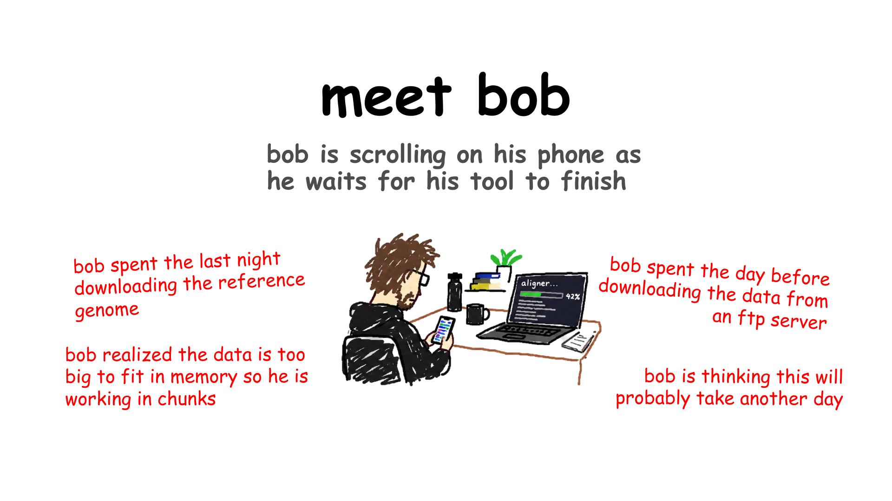

Run high-throughput genomic pipelines directly from your terminal.

THE PROBLEM
You can always fallback to your laptop if needed. You can always do things the old way, download them, inspect them whatever.
THE SOLUTION
An autonomous, terminal-native AI agent to deliver bioinformatics pipelines directly from the command line.
Offload the heavy work to Galaxy.
WORKFLOW OVERVIEW
Galaxy-agent does exactly what you do: real analyses, start to finish.
Ask in plain language; route the heavy steps to Galaxy.
STEP 01 / 06
Agent comes in, creates a history on Galaxy (you name it).
Every run is isolated in its own native Galaxy history, fully trackable and inspectable in the web UI at any time.
STEP 02 / 06
It uploads your files from your disk, or via links intelligently.
STEP 03 / 06
It asks what you are doing, discovers tools on Galaxy, and tells you the plan.
You don't need to know schema definitions or Galaxy XML parameters—the agent queries documentation, selects the optimal tool, and synthesizes the exact parameter configuration.
STEP 04 / 06
You approve it, and it goes ahead and does the thing.
STEP 05 / 06
Results come back—you can click the link to see them ON GALAXY SERVER, or ask it to download them locally and inspect via local tools.
Click the generated link to inspect interactive HTML reports, BAM charts, and visual dashboards directly on the Galaxy web interface.
Stream finished datasets straight to your local directory to inspect via terminal tools like head, grep, or local R/Python scripts.
STEP 06 / 06
You have access to local tools and bash commands all the way via dedicated bash mode ($) versus normal chat mode (>).
Seamlessly switch between the AI agent and your CLI.
Galaxy Loom was the first major project to adopt galaxy-mcp, we will be the second.
The goal is to be better than the competition or be acquired/merged with them.
With the boom in AI, agentic tool usage has gone through the roof:
Offload the heavy work to galaxy, focus on the science.